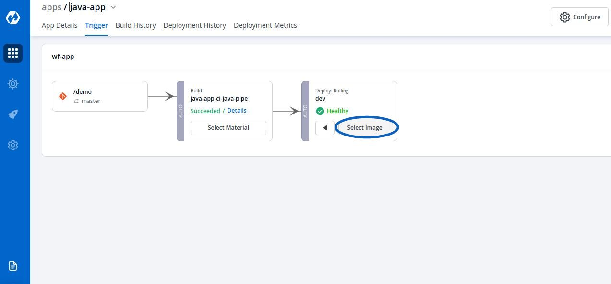
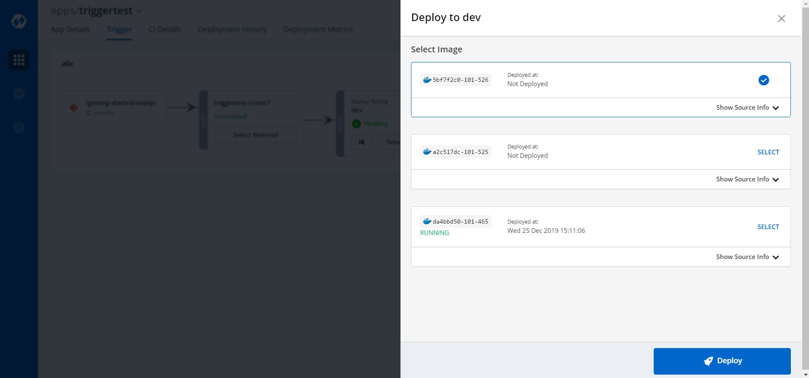
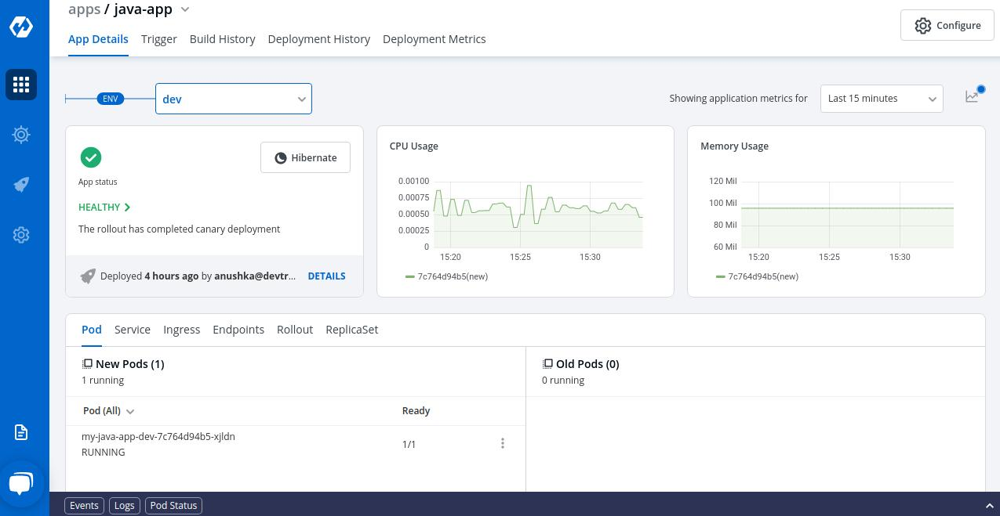

Triggering CD Pipelines

After CI Pipeline is complete, CD Pipeline can be triggered by Clicking on Select Image.

Select an image to deploy and then Click on Deploy to trigger the CD Pipeline.
The running images are tagged as Running

The status of the current deployment can be viewed by Clicking on App Details that will show the Progressing state for 1-2 minutes and then gradually shows Healthy state or Hibernating state, based on the deployment strategy.
Here, triggering CD Pipeline is successful and the deployment is in “Healthy” state.